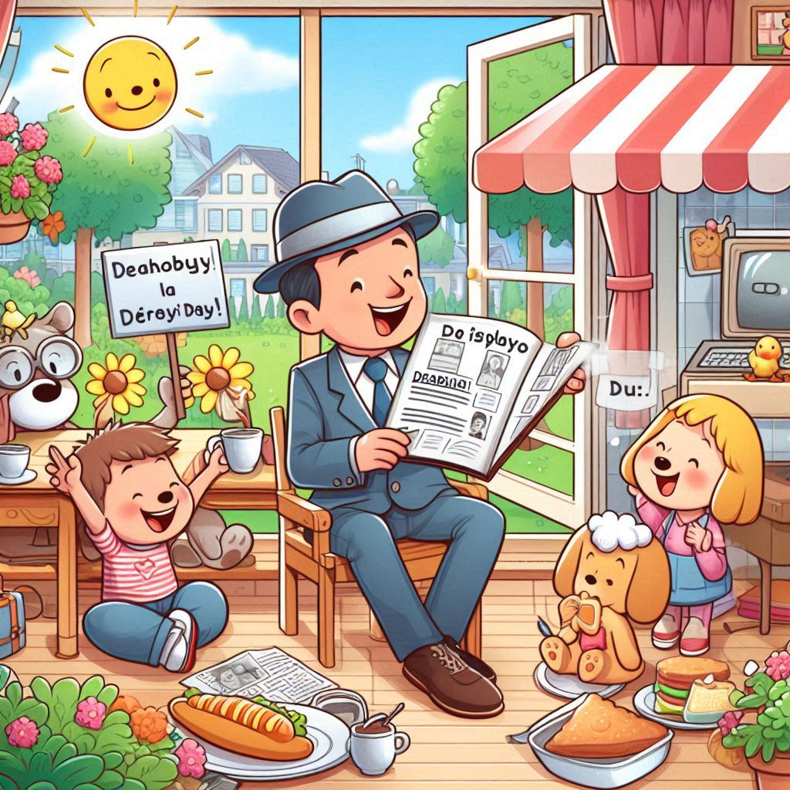

Lunes en francés se dice:

Lundi
Martes en francés se dice:

Mardi
Miercoles en francés se dice:

Mercredi
Jueves en francés se dice:

Jeudi
Viernes en francés se dice:
Vendredi
Sabado en francés se dice:
Samedi
Domingo en francés se dice:

Dimanche